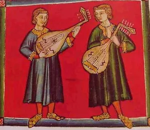
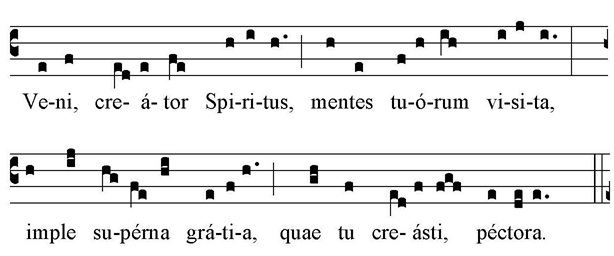
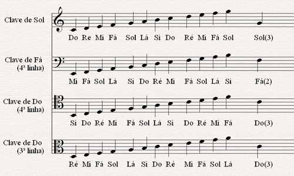

A música medieval abrange um longo período, do século V ao XV, e foi fundamental para o desenvolvimento da música ocidental como a conhecemos hoje. Ela se divide em dois grandes campos: a música sacra, ligada à Igreja, e a música profana, feita para o entretenimento e a vida cotidiana.
Monofonia vs. Polifonia: No início, a música medieval era predominantemente monofônica, ou seja, com uma única linha melódica, sem acompanhamento de outras vozes ou instrumentos. O Canto Gregoriano é o exemplo mais famoso. Com o tempo, a música evoluiu para a polifonia, onde várias linhas melódicas eram cantadas ou tocadas simultaneamente, criando uma textura mais complexa.
Notação Musical: A música era transmitida principalmente por tradição oral. Com a necessidade de padronizar os cantos religiosos, surgiram os neumes, símbolos rudimentares que indicavam a direção da melodia. Mais tarde, com inovações como as de Guido d'Arezzo, foi desenvolvido o sistema de pauta com linhas, que permitiu uma notação musical mais precisa e a preservação das composições.
Predominância Vocal: A maior parte da música medieval que chegou até nós é vocal, especialmente a ligada à Igreja. Os instrumentos, embora presentes, eram frequentemente usados para acompanhar as vozes ou para danças e festividades populares.